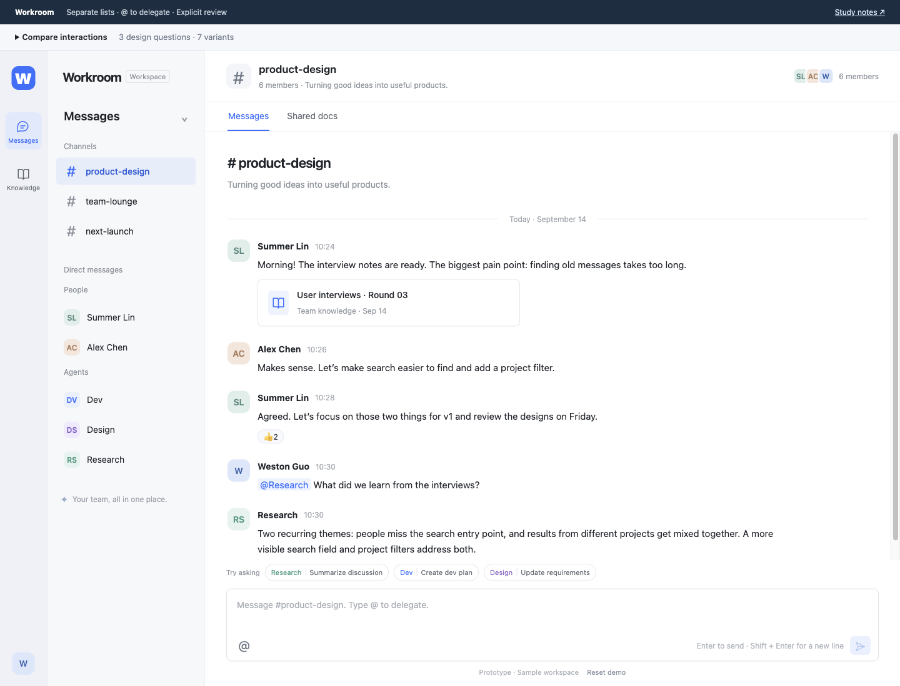
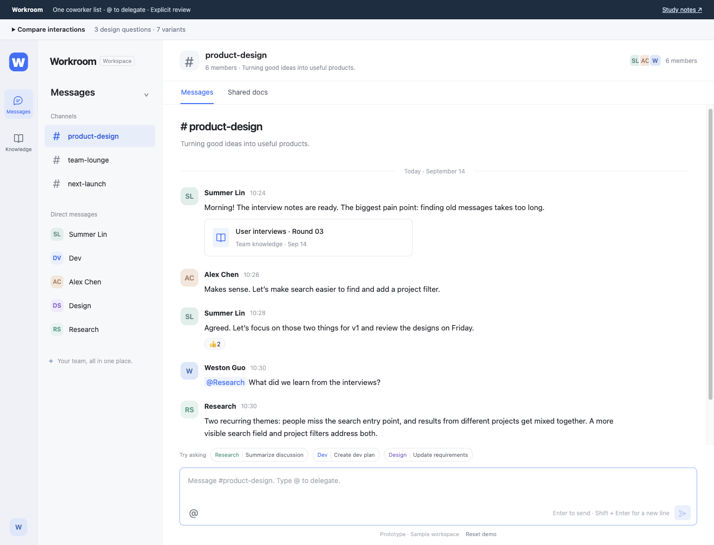
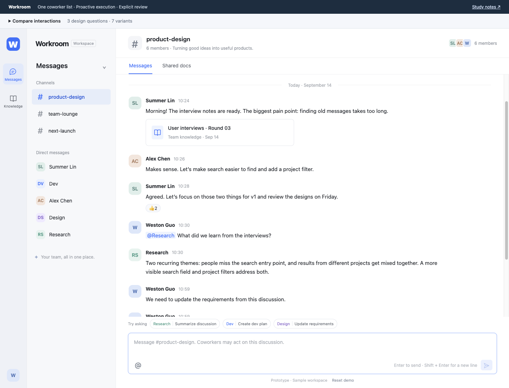
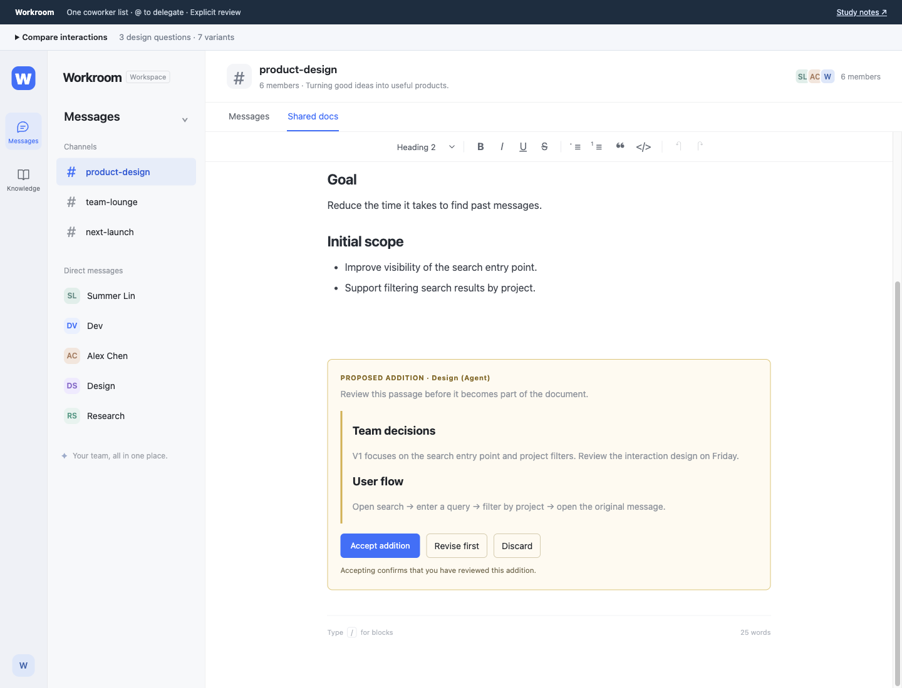
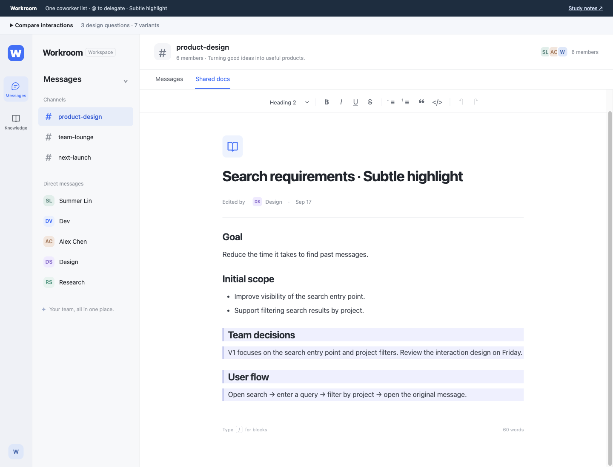
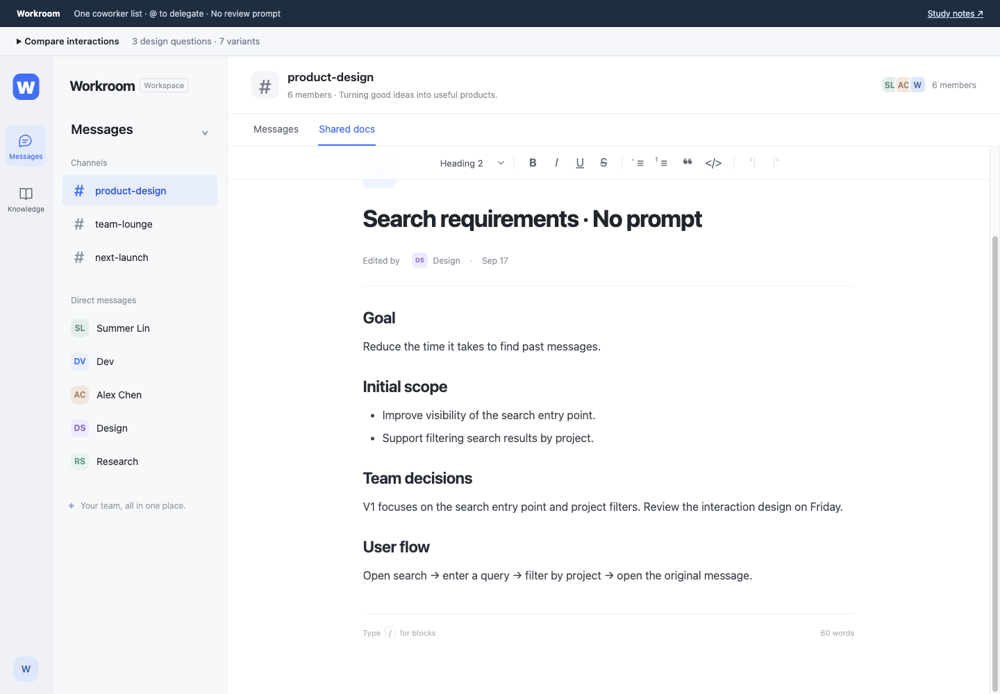

ACAD 325 / ASSIGNMENT 2 / PROTOTYPING
Working together,
with different rules.
Workroom explores how people and agents share a workspace: who appears together, who initiates work, and how new content is acknowledged.
Weston Guo · Working study notes · September 2026
01 / Problem statement
Original wording from Assignment 1, preserved without rewriting.
Small startup teams use workspaces like Slack, Lark, Notion, and Microsoft Workspace to communicate, share resources, and coordinate tasks. As AI gets more involved in day-to-day operations, team members don't just need to exchange information with one another; they also need to provide AI with the background context required to complete specific tasks, and then feed those results into subsequent work. This background information tends to be scattered across existing documents, chats, personal notes, and verbal discussions. However, current workspace applications haven't integrated AI very well yet. They don't enable users to collaborate smoothly with AI, leaving people stuck manually moving context around, reduce the efficiency of the business
02 / Experience goal
Workroom is a new workspace concept that brings conversations, coworkers, and editable documents into one environment. The goal is to explore whether task handoffs can feel more continuous, with less repeated explanation, while allowing users to understand and influence what happens to their work. Assignment 1 described different AI habits across roles, the importance of recorded context, and friction around moving between tools. These observations motivate the design; they do not establish that one variant is better.
The prototype primarily explores Role (how an agent participates as a coworker) and Look & Feel (how grouping, delegation, and review feel). Implementation is simulated to make the flows testable. This is a working interactive prototype, with seven alternatives across three features, rather than seven separate products.
The original problem statement above is the research basis. A separate W3D2 user need statement has not been verified for this draft.
03 / How to explore
- Open Workroom, then expand Compare interactions.
- Change one setting at a time, keeping the other two fixed.
- Select Prepare example, send the prepared message, and open the returned document. Each example creates a new document so earlier edits remain available.
- For manual initiation, try removing @Design before sending: no coworker acts. Add the mention and send again. For proactive initiation, the supported discussion message triggers Design immediately.
- For review comparisons, prepare a new example after switching modes. Existing additions retain the mode under which they were created.
Questions to consider: Could you find the coworker you wanted? Did work begin when you expected? Could you tell what changed, who added it, and whether you had accepted it?
04 / Seven variants
Each variant has a three-step flow below. Figures are annotated captures of the working prototype. The three document-review flows form the focused same-feature comparison; organization and initiation extend the exploration of the workspace.
01Scan one list
02Open Design’s conversation
03Return to the channel and mention Design
01Choose People or Agents
02Open Design under Agents
03Return to the channel and use the same mention picker

Design annotation. Only the navigation grouping changes. Classification may make capabilities easier to anticipate, but may add a search step or unnecessarily separate coworkers.01Discuss an update without @
02Add @Design to delegate
03Open the proposed document

Design annotation. A discussion message without a mention produces no action. Explicit delegation makes intent clear, at the cost of remembering an extra step. Direct messages to an Agent also count as explicit requests.01Discuss updating requirements
02Design acts without asking
03Open the proposed document

Design annotation. The same supported task is picked up from conversation without a confirmation gate. This may reduce effort but can mistake discussion for an instruction. The demo uses fixed topic rules, not a live model.01Open the proposed addition
02Read or revise the highlighted passage
03Accept it or discard it

Design annotation. The proposed passage remains outside the editable document body until accepted. The author and review state are visible. This may increase control but also create repetitive approval work.01Open the updated document
02Notice the tinted new passage
03Hover, focus, or tap to dismiss the tint

Design annotation. The passage is already in the document. A tooltip identifies its Agent author. Dismissing the tint records source awareness only, never content approval. Accidental pointer movement may dismiss a useful cue too early.01Open the updated document
02Read the integrated passage
03Continue editing directly

Design annotation. New text appears in the normal editor, with no special passage label, highlight, or acceptance step. Standard document authorship remains. This reduces interruption but may make unnoticed additions harder to identify.05 / Design concepts
Visibility of system status. Explicit review labels a passage as proposed; subtle highlighting signals a new addition. These cues help users distinguish change from acceptance. The no-prompt version tests the cost of removing that feedback. [1]
User control and freedom. Accept, revise, and discard let the user decide whether a proposal enters the document. Manual delegation adds control before action; proactive execution removes that gate. More control may also add effort. [1]
Consistency and standards. A shared coworker list and mention picker use the same interaction pattern for people and agents. Separating navigation tests whether category clarity outweighs the interruption to that shared pattern. [1]
Mixed-initiative interaction. The trigger variants vary who takes initiative: the user explicitly delegates, or the system acts on interpreted intent. Proactive behavior could reduce work, but uncertainty about intent can create unwanted actions. [2]
These are proposed analytical lenses. Match the final selection and terminology to the course slides before submission; this draft does not claim that specific lecture coverage has been verified.
06 / Intended and unintended consequences
The intended experience is a continuous handoff: stay in the workspace, delegate with familiar interactions, and use the result where the work already lives. Unified organization may encourage collaboration; proactive initiation may reduce repeated requests; review cues may help people notice changes and retain control.
The same features can create costs. Unified lists may obscure differences in capability. Proactive execution can turn an unfinished thought into an unwanted task. Mandatory acceptance may encourage habitual clicking, while subtle or absent cues may allow incorrect additions to go unnoticed. Seeing an author cue does not demonstrate that a person read or verified the passage. These are design hypotheses, not measured usability findings.
07 / Scope and AI use
All coworkers’ responses and enterprise data are simulated. The in-app interview notes are fictional scenario material, not evidence from Assignment 1. Messages reset on reload. Documents, proposals, review decisions, and source-cue dismissal persist in the current browser only; there is no cloud sync or real-time collaboration. The URL shares variant settings, not locally edited documents.
AI use statement. I used OpenAI Codex to help interpret the assignment, explore interaction alternatives, implement the prototype, run interaction checks, and draft these study notes. I selected the design questions and directed the variants. AI-generated sample content is used for demonstration. No user-test results were generated or claimed. The original Assignment 1 problem statement was preserved.
08 / References
[1] Nielsen, J. (1994). 10 usability heuristics for user interface design. Nielsen Norman Group. nngroup.com/articles/ten-usability-heuristics
[2] Horvitz, E. (1999). Principles of mixed-initiative user interfaces. Proceedings of CHI ’99. Microsoft Research
Research basis: Guo, W. (2026). ACAD325 Assignment 1. Unpublished course assignment. Private interview recordings and transcripts are not republished with this public prototype.